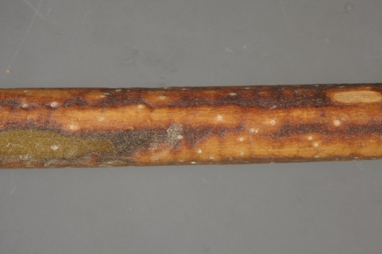
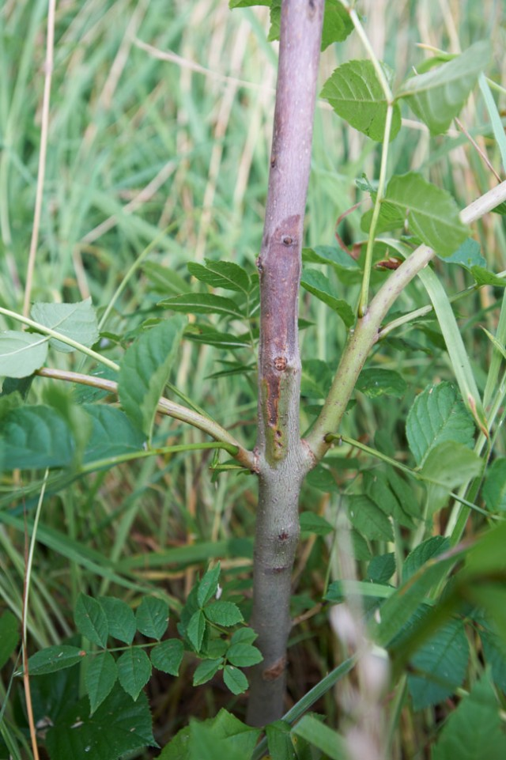
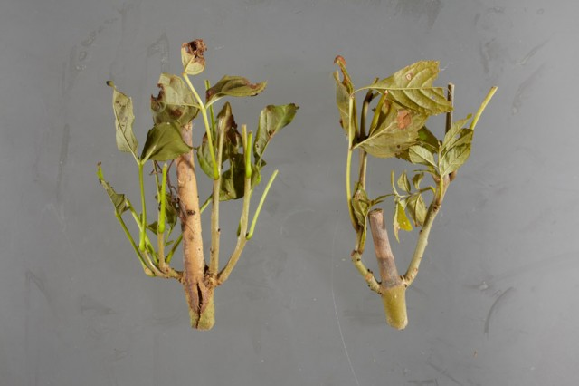
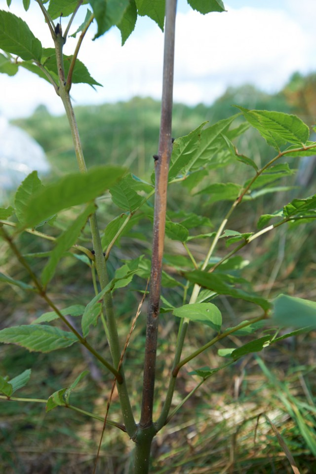
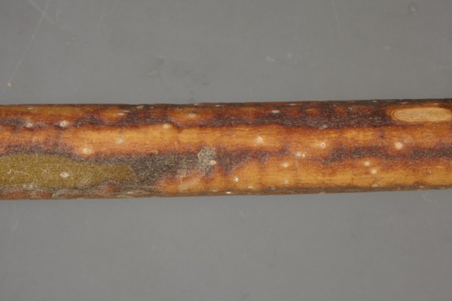
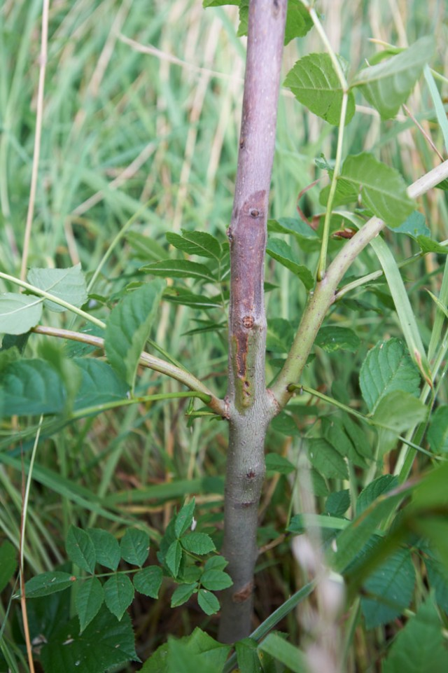
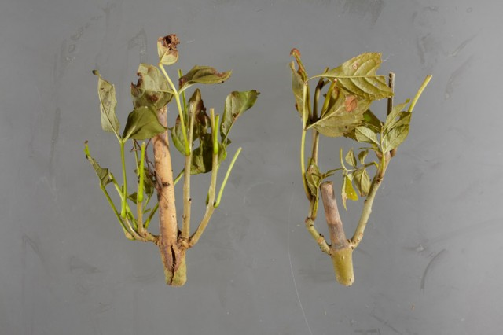
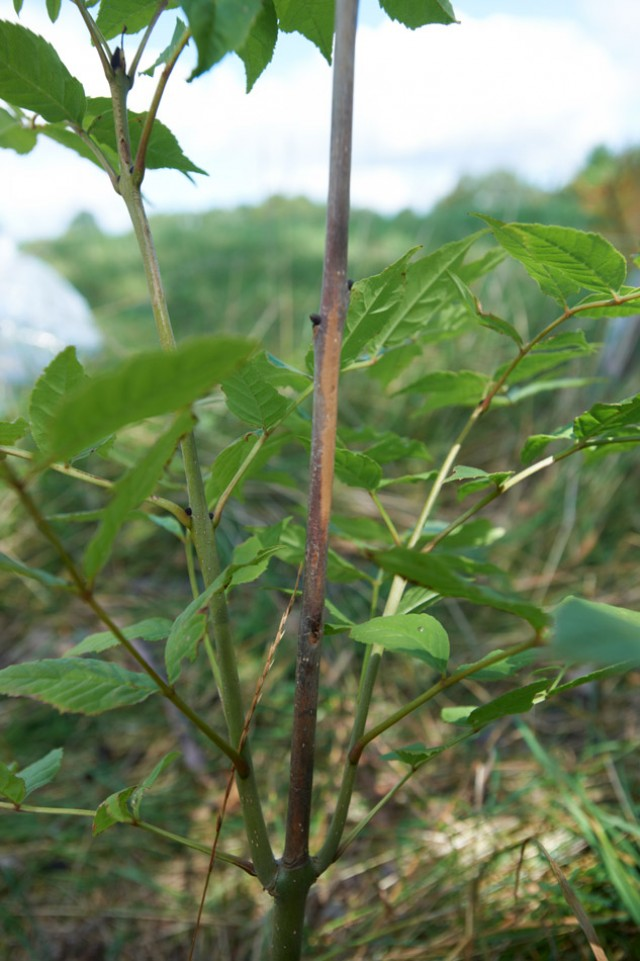

Chalara
HomeChalara fraxinea
(Ash Dieback)
 







Chalara dieback of ash is a serious disease of ash trees caused by a fungus called Chalara fraxinea. The disease causes leaf loss and crown dieback in affected trees, and it can kill trees. You'll find information below on how to spot signs of the disease.
- Diseased saplings typically display dead tops and/or side shoots.
- At the base of dead side shoots, lesions can often be found on the subtending branch or stem.
- Lesions which girdle the branch or stem can cause wilting of the foliage above.
- Mature trees affected by the disease initially display dieback of the shoots and twigs at the periphery of their crowns. Dense clumps of foliage may be seen further back on branches where recovery shoots are produced.
- In late summer and early autumn (July to October), fruiting bodies of Hymenoscyphus can be found on blackened rachises (leaf stalks) of ash in damp areas of leaf litter beneath trees. These do not necessarily belong to the pathogen but can be tested to determine their identity.